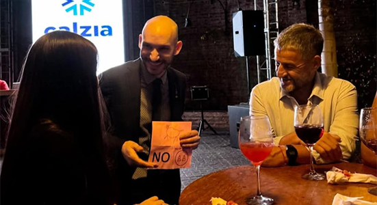

CLOSE UP · RECEPCIÓN · MESA A MESA
Magia de cerca
Ilusionismo y mentalismo a centímetros de los espectadores. Experiencias cara a cara que suceden entre los invitados y, muchas veces, en sus propias manos.
Conocer la propuesta